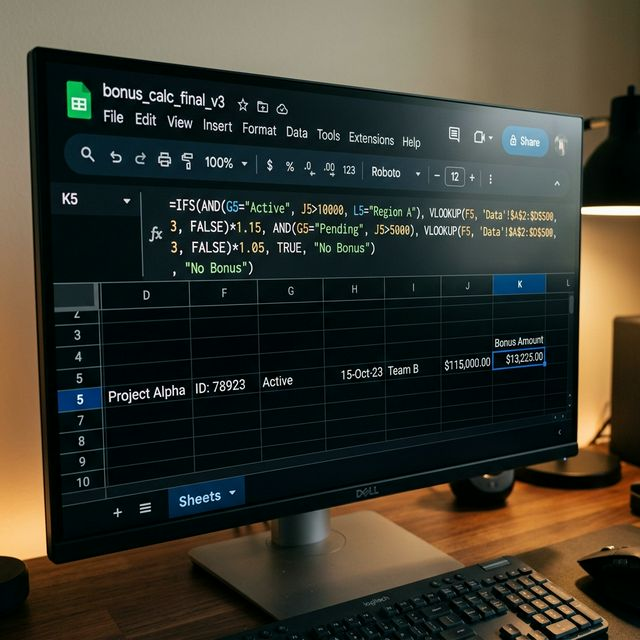
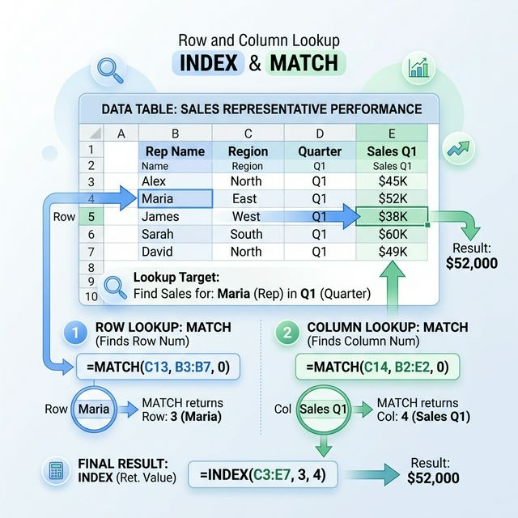

구글 스프레드시트 INDEX & MATCH 가이드 — VLOOKUP의 한계를 넘는 정교한 데이터 참조 기술
"VLOOKUP의 한계에 부딪혔다면, 이제는 INDEX와 MATCH의 강력한 조합을 배울 차례입니다!"
구글 스프레드시트로 복잡한 데이터를 다루다 보면 반드시 마주하게 되는 벽이 있습니다. 바로 수만 행의 데이터 속에서 내가 원하는 값을 자유자재로 추출하는 '참조'의 문제입니다. 대부분의 입문자가
`VLOOKUP`으로 시작하지만, 검색 키워드가 참조 대상보다 오른쪽에 있어야만 한다는 치명적인 단점 때문에 좌절하곤 합니다. 이때 우리에게 진정한 데이터 관리의 자유를 선사하는 것이 바로
`INDEX`와 `MATCH` 함수의 조합입니다.
이 조합은 단순히 값을 찾는 기능을 넘어, 스프레드시트의 행과 열이라는 좌표계를 논리적으로 이해하고 제어하는 가장 정석적인 방법입니다. 최근 `XLOOKUP`이라는 강력한 신규 함수가 등장했지만,
여전히 엑셀과 구글 시트의 구형 버전과의 호환성이나 다중 조건 검색의 유연성 측면에서는 `INDEX & MATCH`의 가치가 압도적입니다. 오늘 이 포스팅에서는 실무에서 바로 써먹을 수 있는 예제와
함께, 데이터 참조의 끝판왕이라 불리는 이 기술을 9단계에 걸쳐 완벽하게 해부해 드립니다.

[ 구글 스프레드시트 환경에서 INDEX와 MATCH 함수를 활용한
고급 수식 설계 / AI 제작 이미지 ]
1. INDEX & MATCH 조합이 실무에서 필수인 이유
스프레드시트 실무에서 `VLOOKUP`은 가장 사랑받으면서도 가장 큰 제약을 가진 함수입니다. `VLOOKUP`은 반드시 기준값이 데이터 범위의 첫 번째 열(가장 왼쪽)에 있어야 하며, 대상을 찾은 후 어느
쪽으로만 이동할 수 있습니까? 무조건 오른쪽으로만 이동이 가능합니다. 즉, 제품명을 기준으로 제품 코드(왼쪽 위치)를 찾아야 하는 상황이 오면 `VLOOKUP` 단독으로는 해결이 불가능해집니다. 이를 '좌향
참조(Left Lookup)의 한계'라고 부르는데, `INDEX & MATCH`는 행과 열의 번호를 직접 지정하는 방식이기에 좌우 방향에 아무런 제약을 받지 않습니다.
또한 구조적인 안정성 면에서도 뛰어납니다. `VLOOKUP`은 찾을 열 번호를 숫자로 직접 입력(예: 3번째 열)하기 때문에, 중간에 새로운 열을 삽입하거나 순서를 바꾸면 수식 결과가 깨지거나 엉뚱한 값을
가져오는 현상이 빈번합니다. 하지만 `INDEX & MATCH` 조합은 특정 열 범위를 직접 참조하므로, 데이터 시트의 구조가 변하더라도 수식이 동적으로 대응하여 결과값의 무결성을 유지합니다. 이는 대규모
프로젝트 관리 시트나 자동으로 업데이트되는 대시보드 구축 시 데이터 손상을 방지하는 강력한 보호막이 됩니다.
마지막으로 '성능'의 차이입니다. `VLOOKUP`은 불필요하게 전체 데이터 범위를 계속해서 스캔하지만, `INDEX & MATCH`는 필요한 행과 열의 인덱스만을 빠르게 조회합니다. 수만 건 이상의 데이터를
다루는 전문가의 시트에서 연산 속도를 결정짓는 것은 결국 수식의 효율성입니다. 이제 입문자의 티를 벗고 데이터 전문가로 거듭나고 싶다면, `VLOOKUP`이라는 편안한 익숙함을 잠시 내려놓고 이 정교한 좌표
기반의 시스템을 이해해야만 합니다.
2. INDEX 함수 이해: 원하는 좌표의 값을 가져오는 내비게이터
`INDEX` 함수의 역할은 매우 단순하고 명확합니다. 특정 범위(지도)를 주었을 때, 몇 번째 행과 몇 번째 열이 만나는 지점의 '값'을 가져오는 것입니다. 예를 들어 5행 3열에 있는 데이터를 가져오라고
명령하면, 그 셀에 어떤 내용이 들어있든 정확히 배달해 줍니다. 수식 구조는 `=INDEX(범위, 행_번호, [열_번호])`로 구성되는데, 여기서 중요한 점은 범위 수식에 준하는 물리적 순서를 기반으로 한다는
것입니다.
실무에서 `INDEX` 함수를 단독으로 사용하는 경우는 드물지만, 이 함수의 메커니즘을 이해하는 것은 매우 중요합니다. `INDEX`는 시트 전체의 셀 주소를 일일이 기억하고 있는 내비게이터와 같아서, 우리가
행 번호만 알려주면 그 행 전체를 가져올 수도 있고 특정 셀 하나만 강조할 수도 있습니다. 구글 스프레드시트에서는 행 번호나 열 번호 자리에 0을 넣거나 생략하면 해당 행 전체나 열 전체를 참조하는 강력한
배열 기능을 수행하기도 합니다.
결국 `INDEX` 함수의 성공 여부는 "우리가 행 번호와 열 번호를 얼마나 정확하게 입력을 해주느냐"에 달려 있습니다. 하지만 우리가 수만 행의 데이터에서 732번째 행인지 1548번째 행인지 매번 수동으로
계산해서 입력할수는 없겠죠? 그래서 우리에게는 이 '번호'를 자동으로 찾아줄 보조 함수가 필요하게 됩니다. 바로 그 비서 역할을 수행하는 것이 다음에 설명할 `MATCH` 함수입니다.
3. MATCH 함수 이해: 데이터의 상대적 위치(번호)를 찾는 추적자
`MATCH` 함수는 우리가 찾는 특정 키워드가 지정한 범위 내에서 '몇 번째'에 위치하는지를 숫자로 반환해 주는 함수입니다. 즉, "A사원이라는 이름이 성명 리스트 중에서 몇 번째 칸에 있어?"라고 물어보고
답변(예: 5)을 받아내는 것이죠. 수식 구조는 `=MATCH(검색_값, 범위, [검색_유형])`입니다. 여기서 `검색_유형` 자리에 `0`을 넣는 것은 '정확히 일치하는 값'을 찾겠다는 뜻으로, 실무의
99% 상황에서 반드시 지켜야 할 규칙입니다.
`MATCH` 함수가 반환하는 값은 대상 셀의 데이터가 아니라, 단순히 그 데이터가 위치한 '순서'라는 점을 명확히 인지해야 합니다. 많은 초보자가 `MATCH`만 쓰면 값이 나올 것으로 기대하지만,
`MATCH`는 오직 "5번째 줄이야", "12번째 칸이야"라고 번호만 알려줄 뿐입니다. 하지만 이 숫자가 바로 앞에서 설명한 `INDEX` 함수가 절실히 필요로 하던 '행 번호' 정보가 됩니다. 두 함수가
만나는 역사적인 지점이 바로 여기입니다.
이 함수의 연산은 매우 빠릅니다. 그리고 무엇보다 범위가 꼭 열(세로)일 필요가 없습니다. 가로 행 범위에서 특정 항목이 몇 번째 열인지도 찾을 수 있습니다. 즉, 동적으로 열 번호를 찾아낼 수 있다는
뜻이며, 이는 나중에 설명할 '2방향 참조'의 핵심 열쇠가 됩니다. 이제 추적자인 `MATCH`가 번호를 따오고, 내비게이터인 `INDEX`가 그 번호에 가서 값을 배달해 주는 완벽한 협업 시스템이
완성되었습니다.

[ 데이터 범위에서 행과 열의 위치를 찾아 교차하는 지점의 값을
추출하는 논리적 구조 / AI 제작 이미지 ]
4. 최강의 결합: INDEX + MATCH 기본 구문 완벽 해부
자, 이제 두 함수를 하나로 합쳐보겠습니다. 가장 기본적인 형태는 다음과 같습니다. =INDEX(가져올_값이_있는_범위, MATCH(기준값, 기준값이_있는_범위, 0)) 주어와
동사처럼 생각하면 쉽습니다. "INDEX야, 이 범위에서 값을 가져와줘. 그런데 몇 번째 행인지(행 번호)는 MATCH가 알려준 대로 해줘!"라는 의미입니다. 이때 `INDEX`의 범위와 `MATCH`의
범위는 시작 행과 끝 행이 반드시 수직으로 일치해야 한다는 점을 잊지 마세요.
이 결합 수식을 사용하면 `VLOOKUP`이 가진 열 번호를 세야 하는 번거로움이 완전히 사라집니다. 단순히 내가 값을 가져올 열 하나만 `INDEX`에 넣고, 기준이 되는 열 하나만 `MATCH`에 넣으면
됩니다. 수식이 매우 간결해지고 직관적으로 변합니다. 행과 열을 부품화하여 조립했기 때문에, 데이터가 수백만 행으로 늘어나더라도 관리 포인트가 명확해집니다. 이 수식을 한 번만 제대로 작성해 두면, 당신의
시트는 마치 살아있는 유기체처럼 데이터 변화에 민감하게 반응하게 됩니다.
구글 스프레드시트 입문자가 중급자로 넘어가는 가장 확실한 징표는 바로 `INDEX & MATCH`를 자유자재로 중첩하여 쓰기 시작할 때입니다. 이 방식은 나중에 배울 `ARRAYFORMULA`와 결합하면 더욱
강력한 자동화 파워를 뿜어내지만, 그 전에 이 기본 결합 모델의 원리를 눈을 감고도 설명할 수 있을 만큼 익숙해지는 과정이 필요합니다. 아래의 코드 박스를 보고 수식의 리듬감을 직접 느껴보시기 바랍니다.
// INDEX & MATCH 기본 결합 공식
=INDEX(D:D, MATCH("A상품", B:B, 0))
/* 설명: B열에서 "A상품"을 찾아 그 행 번호를 알아낸 뒤,
D열의 같은 행 번호에 있는 '가격' 혹은 '재고' 정보를 가져옴 */
5. 실무 적용 1: 좌향 참조(Left Lookup) 완벽 구현
사례를 들어보겠습니다. 여러분의 데이터 시트가 `[B열: 이름 | A열: 사번]` 순서로 되어 있다고 가정해 봅시다. `VLOOKUP`은 사번을 기준으로 이름을 찾는 것(오른쪽 방향)은 잘하지만, 이름을
기준으로 사번을 찾는 것(왼쪽 방향)은 절대로 하지 못합니다. 범위를 재조정하거나 데이터를 복사해서 순서를 바꿔야만 하죠. 하지만 데이터 원본을 건드리는 행위는 실무에서 매우 위험한 도박입니다. 이럴 때
`INDEX & MATCH`의 진가가 드러납니다.
수식은 이렇게 작성됩니다: =INDEX(A:A, MATCH("홍길동", B:B, 0)). 여기서 `INDEX`는 가져올 값인 사번이 있는 A열을 바라보고, `MATCH`는 검색
키워드인 이름이 있는 B열을 스캔합니다. 두 열의 위치 관계가 왼쪽이든 오른쪽이든 상관없이, 오직 "행 번호"라는 공통 분모만으로 데이터를 연결합니다. 이 방식은 데이터의 순서와 관계없이 내가 원하는 정보를
'핀셋 추출'할 수 있게 해줍니다.
이 기술은 특히 ERP에서 내려받은 원본 데이터를 그대로 유지하면서 다른 시트에서 리포트를 뽑아낼 때 유용합니다. 원본의 열 순서가 아무리 엉망이라도, 여러분은 이 기술을 통해 원하는 값만 쏙쏙 뽑아올 수
있는 강력한 '필터'를 보유하게 된 셈입니다. 이제 "데이터 순서가 달라서 못 해요"라는 변명은 여러분의 사전에서 영원히 사라지게 될 것입니다.
6. 실무 적용 2: 행과 열을 동시에 찾는 2방향(Two-way) 참조
`INDEX & MATCH`의 최종 진화 형태는 2방향 참조입니다. 행 번호뿐만 아니라 열 번호까지 `MATCH` 가 찾아내게 만드는 것이죠. 예를 들어, 가로축에는
'월(1월~12월)'이 있고 세로축에는 '지점명'이 있는 방대한 매출표가 있다고 칩시다. "부산 지점"의 "5월" 매출을 가져오려면 행과 열의 교차점을 찾아야 합니다. `VLOOKUP`으로는 5월이 몇 번째
열인지 수동으로 세어서 입력해야 하지만, 2방향 `INDEX & MATCH`는 이를 자동으로 수행합니다.
수식 예시: =INDEX(B2:M100, MATCH("부산지점", A2:A100, 0), MATCH("5월", B1:M1:0)). 앞의 `MATCH`는 부산지점의 행 번호를,
뒤의 `MATCH`는 5월의 열 번호를 찾아내어 `INDEX`에게 넘겨줍니다. 이렇게 하면 지점명이 바뀌거나 월 항목이 추가되더라도 수식을 수정할 필요 없이 정답을 찾아냅니다. 이는 동적인 대시보드를 구축할
때 필수적인 스킬입니다.
많은 실무자가 이 기능 앞에서 전율을 느낍니다. 숫자로 하드코딩되던 열 번호가 논리적인 검색 결과로 대체되는 순간, 여러분의 엑셀/구글 시트 역량은 비약적으로 도약합니다. 이제 어떤 복잡한 매트릭스 형태의
표가 주어지더라도, 여러분은 단 한 줄의 수식으로 원하는 교차점의 데이터를 즉시 소환해 낼 수 있습니다. 이 기술은 특히 인사 관리, 프로젝트 타임라인, 분기별 매출 요약 보고서 등에서 빛을 발할 것입니다.
[ 전문적인 비즈니스 대시보드 구축에 활용되는 INDEX와
MATCH 함수의 결합 / AI 제작 이미지 ]
7. 대규모 데이터셋에서의 성능과 구조적 장점
데이터를 다루는 전문가의 관점에서 `INDEX & MATCH`가 선호되는 가장 큰 이유는 연산 최적화와 유지보수성입니다. `VLOOKUP`은
내부적으로 참조 범위 내의 모든 열을 메모리에 로드하고 검색하는 과정을 거치지만, `INDEX & MATCH`는 사용자가 지정한 딱 두 개의 열(가져올 열, 기준 열)만을 스캔합니다. 행이 10만 행,
100만 행으로 늘어나는 빅데이터 환경에서 이 작은 차이는 시트가 '버벅이는지' 아니면 '부드러운지'를 결정짓는 결정적 변수가 됩니다.
구조적 장점 또한 무시할 수 없습니다. 직장 상사가 "이 시트 중간에 '비고' 열 하나만 추가해봐"라고 요청했을 때를 떠올려 봅시다. `VLOOKUP`으로 가득 찬 시트라면 열을 삽입하는 순간 모든 열 번호
지표가 어긋나며 시트 전체가 `#N/A`와 `#REF!` 오류로 뒤덮이게 됩니다. 하지만 `INDEX & MATCH`는 열의 물리적 위치가 아닌 '범위 그 자체'를 참조하고 있으므로, 중간에 암만 열을
삽입하거나 삭제해도 범위를 직접 삭제하지 않는 한 수식의 정확도가 보존됩니다.
결국 도구의 선택은 '안전'의 문제입니다. 고장 나기 쉬운 수식을 쓰며 불안해할 것인가, 아니면 환경 변화에 강인한 수식을 구축하여 시스템의 신뢰도를 높일 것인가의 갈림길입니다. 데이터가 자산이고 실수가
치명적인 비즈니스 현장에서 전문가들이 고집스럽게 `INDEX & MATCH`를 사용하는 데에는 다 그만한 이유가 있습니다. 여러분도 이제 이 강력한 설계 철학을 여러분의 업무 시트에 이식해 보시기 바랍니다.
8. 자주 발생하는 오류 및 문제 해결(Troubleshooting)
아무리 좋은 도구라도 잘못 쓰면 날카로운 독이 됩니다. `INDEX & MATCH`를 사용할 때 가장 흔하게 발생하는 오류는 바로 범위 불일치입니다. `INDEX`에 준 범위가
1행부터 500행까지인데, `MATCH`가 검색한 범위가 2행부터 501행까지라면 어떻게 될까요? 행 번호가 하나씩 밀리게 됩니다. "홍길동"을 찾았는데 옆 칸에 있는 "김철수"의 사번을 가져오는 비극이
발생하죠. 항상 두 함수의 범위 시작과 끝이 자를 댄 듯 정확히 일치하는지 확인하십시오.
두 번째는 무조건적인 검색 유형 '0' (정확히 일치) 누락입니다. `MATCH` 함수의 세 번째 인수인 `0`을 생략하면 기본적으로 '유사 일치'로 작동하게 되는데, 이 경우
데이터가 오름차순으로 정렬되어 있지 않으면 엉뚱한 순서 번호를 뱉어냅니다. 실무에서는 정렬과 관계없이 정확한 값을 매칭해야 하므로, 수식 뒤에 `,0`을 붙이는 것을 기계적으로 반복하여 습관화해야
합니다.
마지막으로 `#N/A` 오류입니다. 이는 단순히 검색하려는 키워드가 범위 내에 없다는 뜻입니다. 이때는 수식 전체를 의심하기보다 데이터에 오타가 있는지, 혹은 숨어있는 공백 문자가 있는지 점검해 보세요.
오류가 발생했을 때 이를 세련되게 처리하고 싶다면 `IFERROR` 함수를 하나 더 씌워주면 됩니다. =IFERROR(INDEX&MATCH수식, "결과없음") 처럼 말이죠.
오류를 다루는 태도가 곧 여러분의 수식 설계 능력을 증명해 줄 것입니다.
9. 마스터 요약: INDEX & MATCH vs XLOOKUP, 무엇이 답인가?
마지막으로 2026년 현재의 스프레드시트 트렌드를 짚고 넘어가겠습니다. 최근 구글 시트와 엑셀에는 `INDEX & MATCH`의 기능을 하나로 합친 XLOOKUP이라는 파괴적인
함수가 도입되었습니다. 훨씬 쉽고 직관적이죠. 그렇다면 여전히 `INDEX & MATCH`를 배워야 할까요? 정답은 "YES"입니다. `XLOOKUP`은 최신 버전의
소프트웨어에서만 작동합니다. 여러분이 작성한 시트를 협력사나 다른 환경의 사용자가 열었을 때, 버전 차이로 인해 시트가 마비되는 참사를 막으려면 보편적인 `INDEX & MATCH`의 숙련도가 반드시
필요합니다.
또한, 다중 조건 검색(이름도 같고 부서도 같은 사람 찾기) 상황에서는 `INDEX & MATCH`가 가진 논리적 구조가 훨씬 더 가독성이 좋고 응용 범위가 넓습니다. 기초 체력이 튼튼해야 고난도 운동을 할
수 있듯이, `INDEX`와 `MATCH`를 통해 행과 열의 좌표계를 정복한 사람은 어떤 새로운 함수가 나와도 금세 적응합니다. 반대로 이 원리를 모른 채 쉬운 함수(XLOOKUP)만 쓴다면, 수식이
복잡해졌을 때 논리의 미로에 빠지기 쉽습니다.
오늘 우리는 데이터 참조의 근간이자 전문가의 전유물이었던 `INDEX & MATCH`의 모든 것을 살펴보았습니다. 지금 당장 여러분의 업무 시트에서 가장 길고 비효율적인 `VLOOKUP` 수식 하나를
골라보세요. 그리고 오늘 배운 대로 `INDEX`와 `MATCH`로 재설계해 보십시오. 수식이 간결해지고 연산이 빨라지는 것을 체감하는 그 순간, 당신은 이미 구글 스프레드시트 상위 1% 기술자의 길로 들어선
것입니다. 데이터에 지배당하지 말고, 강력한 함수로 데이터를 지배하는 효율적인 일잘러가 되시길 응원합니다.
#구글스프레드시트
#INDEXMATCH
#VLOOKUP한계
#엑셀배우기
#데이터참조
#직장인엑셀
#업무자동화
#스프레드시트꿀팁
#고급함수
#구글시트독학